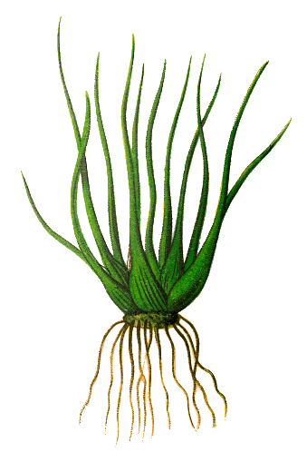
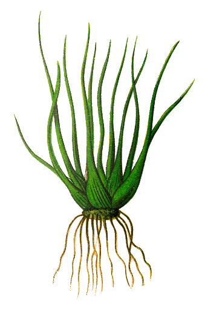

ISOETES
 

Descripción morfológica
Isoetes es un género de plantas vasculares pequeñas con aspecto de césped. Posee hojas aciculares (en forma de aguja) que emergen en espiral desde un tallo subterráneo o cormo. Estas hojas son rígidas y huecas.
El cormo es corto y a menudo se encuentra enterrado en el sedimento acuático. A diferencia de otras plantas, la reproducción ocurre en estructuras especializadas en la base de las hojas.
Distribución y hábitat
Se distribuye en ambientes acuáticos o semisumergidos de lagunas, ríos lentos o zonas pantanosas en diversos continentes.
Prefiere aguas limpias y suelos con buen contenido de nutrientes. Algunas especies también crecen en suelos temporalmente inundados.
Ciclo de vida y reproducción
Isoetes tiene un ciclo de vida perenne y se reproduce por esporas. Produce microsporas y megasporas que germinan para formar gametofitos.
La fecundación requiere agua y da lugar a una nueva planta que emerge desde el cormo.
Usos principales
üåø Ornamentales: Por su aspecto peculiar y adaptabilidad a medios acuáticos, se emplea en acuarios, jardines acuáticos y proyectos de restauraci√≥n ecol√≥gica.
Ficha botánica
| Nombre común | Isoetes |
|---|---|
| Nombre científico | Isoetes spp. |
| Reino | Plantae |
| Filo | Lycopodiophyta |
| Clase | Lycopodiopsida |
| Orden | Isoetales |
| Familia | Isoetaceae |
| Género | Isoetes |
| Tipo de planta | Hierba acuática perenne |
| Altura | 5 a 20 cm |
| Reproducción | Esporas |
| Usos | Ornamental |